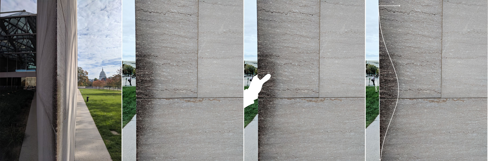

Living in New York City can be as exhilarating as it is annoying. Inspired by Fluxus happenings and cook books, Big Apple Recipes devises three “recipes” using common household objects to recreate the data landscape of NYC living. Through “music,” “tea,” and “prints,” this project explores the collective lives of New York City through sound, taste, and touch. We invite improvisation and participation from home with #bigapplerecipes.
This project is a part of NYC Open Data Week and the Data Through Design 2021 exhibition. Since the pandemic prevents a conventional gallery format, Big Apple Recipes situates abstract datasets in objects available in most households to grant visitors an intuitive way to understand the data at hand. Each section contains a snippet of the data, a detailed recipe for making the data experiential, and an example video of someone using the recipe. Thanks to Daniel King for lending his technical expertise and Rose Hegele for her beautiful voice.

This project is inspired by Snoweria’s visit to the National Gallery East Wing in Washington D.C. I.M. Pei’s impressively thin wall has drawn many visitors’ touch, and a small section of the Tennessee marble adopted a sheen as a result. The cumulative handprints roughly resembled the shape of a normal curve flipped on its side. Knowing that human height is normally distributed, the artist reasoned that the shape of the sheen is caused by everyone touching the wall at a level intuitive for their height. This seemed like a simple connection, but Snoweria loved the physicalization and grounding of what is otherwise abstract data. This is what Big Apple Recipes aims to do.
Snoweria is a designer, artist, and mathematician. She is currently the Urban Innovation Architect at KPF Urban Interface. Previously, she did research at the MIT Senseable City Lab. Her work spans architecture, urbanism, computation, and technology. Snoweria has written about the intersection of data and urban issues, and her design was recently featured on the cover of Nature. She also draws a webcomic called Lonesome Whales.